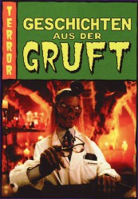

")
Alternativ: Tales from the Crypt
 
 IMDB-Wertung: 8.0 / 10
IMDB-Wertung: 8.0 / 10  Metascore:
Metascore: 
Geschichten aus der Gruft" ("Tales from the Crypt") ist eine Horror-Serie, die auf diversen Comics von William Gaines (auch bekannt als Bill Gaines), welche den bekannten "Gespenster-Geschichten" in gewisser Weise ähneln, basiert. Eine Episode dauert ca. 30 Minuten und beinhaltet jeweils eine abgeschlossene Story. Der Gruftie (Cryptkeeper) leitet jede Episode mit seinem unverwechselbaren Charme ein und bereitet den Zuschauer auf den bevorstehenden Horrortrip vor.
Jahr: 1989
Dauer: 26 Minuten
FSK: 18
Land: USA Studio: HBOTonspuren:
Untertitel:
Auflösung: SD (704x512) Größe: 298 MB
Genre: Thriller, Horror, Komödie, Fantasy, Krimi, TV-Serie
Regisseur: Russell Mulcahy, Elliot Silverstein,  Robert Zemeckis,
Robert Zemeckis,  Richard Donner, Tom Holland,
Richard Donner, Tom Holland,  Walter Hill,
Walter Hill,  Stephen Hopkins, Howard Deutch, Kevin Yagher,
Stephen Hopkins, Howard Deutch, Kevin Yagher,  John Harrison, Gilbert Adler, Gary Fleder, Rodman Flender, William Malone, Mary Lambert, Fred Dekker, Richard Greenberg, Randa Haines, Rowdy Herrington, David Burton Morris, Charlie Picerni, Jeffrey Price, J. Michael Riva, Arnold Schwarzenegger, Peter S. Seaman, Jack Sholder, Jim Simpson, Chris Walas, Manny Coto, Steven E. de Souza, Michael J. Fox, Todd Holland,
John Harrison, Gilbert Adler, Gary Fleder, Rodman Flender, William Malone, Mary Lambert, Fred Dekker, Richard Greenberg, Randa Haines, Rowdy Herrington, David Burton Morris, Charlie Picerni, Jeffrey Price, J. Michael Riva, Arnold Schwarzenegger, Peter S. Seaman, Jack Sholder, Jim Simpson, Chris Walas, Manny Coto, Steven E. de Souza, Michael J. Fox, Todd Holland,  Tobe Hooper, Tom Mankiewicz, Michael Thau, Andy Wolk,
Tobe Hooper, Tom Mankiewicz, Michael Thau, Andy Wolk,  John Frankenheimer,
John Frankenheimer,  William Friedkin,
William Friedkin,  Tom Hanks, Robert Longo, Peter Medak, Steve Perry, Joel Silver, Paul Abascal, Jeffrey Boam, Uli Edel, Bob Gale, Kevin Hooks, W. Peter Iliff, Kyle MacLachlan, Gregory Widen, Mick Garris, Jonas McCord, Ramón Menéndez, Roland Mesa, Vincent Spano, Martin von Haselberg, John Herzfeld, Larry Wilson, Mandie Fletcher, Freddie Francis, Christopher Hart,
Tom Hanks, Robert Longo, Peter Medak, Steve Perry, Joel Silver, Paul Abascal, Jeffrey Boam, Uli Edel, Bob Gale, Kevin Hooks, W. Peter Iliff, Kyle MacLachlan, Gregory Widen, Mick Garris, Jonas McCord, Ramón Menéndez, Roland Mesa, Vincent Spano, Martin von Haselberg, John Herzfeld, Larry Wilson, Mandie Fletcher, Freddie Francis, Christopher Hart,  Brian Helgeland, Peter Hewitt, Bob Hoskins, Bill Kopp, Peter MacDonald, Andrew Morahan, Thomas E. Sanders, James H. Spencer, Patrick A. Ventura, Robin Bextor
Brian Helgeland, Peter Hewitt, Bob Hoskins, Bill Kopp, Peter MacDonald, Andrew Morahan, Thomas E. Sanders, James H. Spencer, Patrick A. Ventura, Robin Bextor
Drehbuch: Robert Harling
Soundtrack:
Darsteller:
 John Kassir als Crypt Keeper
John Kassir als Crypt Keeper Miguel Ferrer als Gary
Miguel Ferrer als Gary Cam Clarke als Bailiff Wolf
Cam Clarke als Bailiff Wolf Larry Drake als Santa
Larry Drake als Santa Bobcat Goldthwait als Big Bad Wolf
Bobcat Goldthwait als Big Bad Wolf Lance Henriksen als Reno Crevice
Lance Henriksen als Reno Crevice William Sadler als Niles Talbot
William Sadler als Niles Talbot Marshall Bell als Husband
Marshall Bell als Husband Michael Ironside als Burrows
Michael Ironside als Burrows Marshall R. Teague als Frank
Marshall R. Teague als Frank Troy Evans als Al
Troy Evans als Al Tim Ahern als Detective
Tim Ahern als Detective Joe Pantoliano als Casino Dealer
Joe Pantoliano als Casino Dealer Lewis Arquette als Ernest Feeley
Lewis Arquette als Ernest Feeley Patricia Arquette als Mary Jo
Patricia Arquette als Mary Jo Frances Bay als Witch
Frances Bay als Witch Moses Gunn als Uncle Ezra Thornberry
Moses Gunn als Uncle Ezra Thornberry William Hickey als Carlton Webster
William Hickey als Carlton Webster D.W. Moffett als Logan Andrews
D.W. Moffett als Logan Andrews Demi Moore als Cathy Marno
Demi Moore als Cathy Marno Don Rickles als Mr. Ingels, Ventriloquist
Don Rickles als Mr. Ingels, Ventriloquist Beau Bridges als Dr. Martin Fairbanks
Beau Bridges als Dr. Martin Fairbanks Kirk Douglas als General Kalthrob
Kirk Douglas als General Kalthrob Teri Garr als Irene Paloma
Teri Garr als Irene Paloma John Glover als Undertaker
John Glover als Undertaker Whoopi Goldberg als Herself
Whoopi Goldberg als Herself Brion James als Steve Dixon
Brion James als Steve Dixon Richard Jordan als Charles McKenzie
Richard Jordan als Charles McKenzie Jon Lovitz als Barry Blye
Jon Lovitz als Barry Blye Kyle MacLachlan als Earl Raymond Digs
Kyle MacLachlan als Earl Raymond Digs Andrew McCarthy als Edward Foster
Andrew McCarthy als Edward Foster Malcolm McDowell als Donald Longtooth
Malcolm McDowell als Donald Longtooth Tim Roth als Jack Craig
Tim Roth als Jack Craig Steven Weber als Dale Sweeney
Steven Weber als Dale Sweeney Raymond J. Barry als Joe Garrett
Raymond J. Barry als Joe Garrett Sonia Braga als Sophie Wagner
Sonia Braga als Sophie Wagner Timothy Dalton als Lokai
Timothy Dalton als Lokai Blythe Danner als Margaret
Blythe Danner als Margaret Cathy Moriarty als Alison Peters
Cathy Moriarty als Alison PetersDatei: X:\FSK18-Serien\Geschichten aus der Gruft\S01\Geschichten aus der Gruft S01E01.avi seit 01.06.2017
Festplatte: FSK18
 Es gibt insgesamt 17 Filme in der Gruppe 'FSK18-Serien'
Es gibt insgesamt 17 Filme in der Gruppe 'FSK18-Serien'